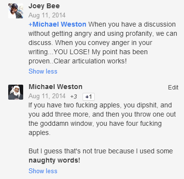

On tone policing.
Remains relevant
Yes, but bear in mind anyone can use this argument.
Richard Dawkins wrote an especially brilliant version of it, and is someone whose tone most people complain about.But that’s only an issue if your true objection to Dawkins is his tone.
…but that’s still an issue if people making “tone arguments” have true objections more nuanced than tone.
Hmm? I don’t quite get that.
Usually the objection to Dawkins is that he’s islamophobic and sexist.
So my point was… when you’re saying “tone doesn’t matter at all, and you’re Hurting Marginalized People™ if you set boundaries around civility”—are you consistent about that when someone you despise says it too? Are you certain *everything* you’re pissed off at Dawkins about is something other than his tone?
Like… here’s what I mean. People who say “don’t tone police” are making the accurate observation that 2+2=4 whether someone says it like
“2+2=4”
Or
“2+2=4, you festering pustule on the hairy asscheek of humanity!”
But my issue with it is… read the following sentences:
“2+2=4.”
“2+2=4, libtards.”
“2+2=4. LOL wypipo smdh 🙄”
“2+2=4. Triggered yet, snowflake?”
“2+2=4. Smash the cis-tem!”
“2+2=4, no matter how many times I argue this with brainwashed religitards.”
Do you have a different reaction to these sentences? Maybe you don’t—maybe you rightly key on the topic of debate, what 2+2 equals and what that tells us about what to do—but a lot of people react to being insulted.
What people are saying when they say “I don’t support/no longer support dismissing people for ‘using the tone argument’” is generally something of the genus “I recognize that humans have emotions and act weird when emotional buttons are pushed. I think there are going to be situations where people can’t get to the 2+2=4 bit because you just punched them in the Feelings.”
I think that’s a bit different though. Someone who says “2+2=4, libtards” isn’t just saying that 2 and 2 make 4. They’re saying people with liberal leanings don’t have the intellectual capacity to understand that fact and by extension any fact that is self evident to that person but is actually a matter of opinion.
The thing is there’s tone policing and there’s tone policing. There’s a form of it that is silencing. Like telling a black woman to calm down when she’s screaming in anguish her son was murdered by police. Her anger and pain is legitimate and part of the conversation. Tone policing her is dismissing her.
Then there are less emotionally charged conversations where people could actually hear each other if they spoke with respect to each other but aren’t.
That’s fair.
I just feel like there are a lot of people who say “I’m marginalized, don’t dismiss me as angry because I’m saying mean things. If you’re respectful enough to not take it personally, you know I don’t mean you!”
Which 1) I think totally minimizes how much emotions affect people and 2) this may just be me, but… it seems to me a lot of people who go for this version of the thing later get outed as abusive, or even just toxically mean.
There are definitely situations where making your point in a polite tone is more efficient and screaming just makes no sense. And yes, abusive behaviour masquerading as righteous is definitely a thing on all sides of the political spectrum.
Yes. There’s “i get called angry the minute I say anything with emotion, despite that I am talking about things it makes perfect sense to sound emotional about, and that’s unfair to me” and then there’s “if you don’t let me insult you at will, you are a bad ally and I get to shame you.”
The first thing is valid and the second thing is bs.
It goes beyond that too. There’s this really insidious “the Oppressed can’t control their emotions” thing going on, that really treats various Opressed groups as if they’re emotionally incontinent, immature, and lack self control. Basically, inferior to the non Opressed by a good number of metrics.
I don’t know that that’s necessarily the implication (although surely each possible such claim needs to be evaluated on its own.) To go to the example used earlier, being angry that your son was shot is a perfectly appropriate and rational thing to feel.
So.
To start with – yes, obviously, there is no direct connection between a statement’s tone and its validity. “2+2=4″ has exactly the same truth value as “2+2=4, fucktard.” The fact that someone is uncivil doesn’t make him wrong, and if you’re incapable of processing arguments that are presented in an uncivil way, you’re going to be missing out on ideas and data.
There are a lot of reasons to be in favor of tone-policing regardless.
Many of those reasons are, uh, orthogonal to truth entirely. “This is a nice friendly discourse space where people like engaging with each other and batting ideas around. If you start throwing around insults or slurs or whatever, we’re going to throw you out, because you’re making it suck for everyone – and it doesn’t matter how right your arguments are, we’re not throwing you out for being wrong, we’re throwing you out for being an asshole.” [Also, “One side effect of this policy is that you’re going to have to be civil if you want the chance to persuade anyone.”]
But there are also truth-valent reasons to care about tone. In particular, as has been noted several times in this thread, tone is strongly tied up with emotional argumentation, and humans really like to use emotional argumentation as an end-run around logic.
Unless you want policy debates to be a contest of sob stories and righteously indignant tirades, with the top prizes going to the most skilled wielders of pathos-driven rhetoric, at some point you have to say: go and grieve and rage on your own time. You can seek out sympathy, or you can make your case, but you can’t do those things at the same time. When you want other people to take your thoughts seriously, present them according to our discursive norms.
This is basically a cultural arms-control treaty.